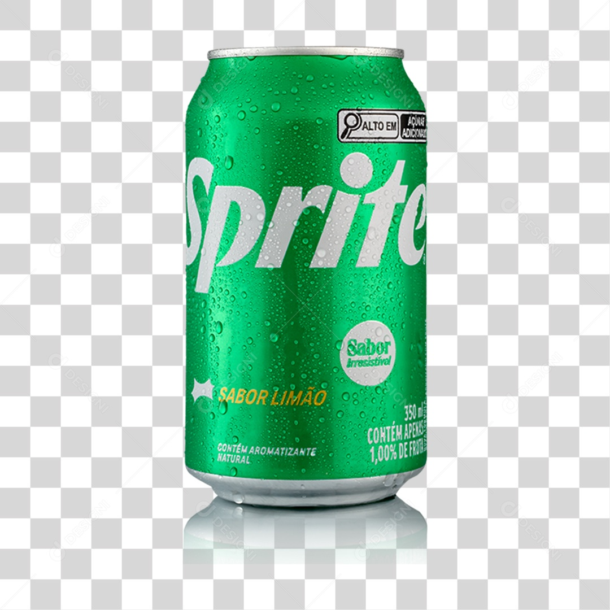
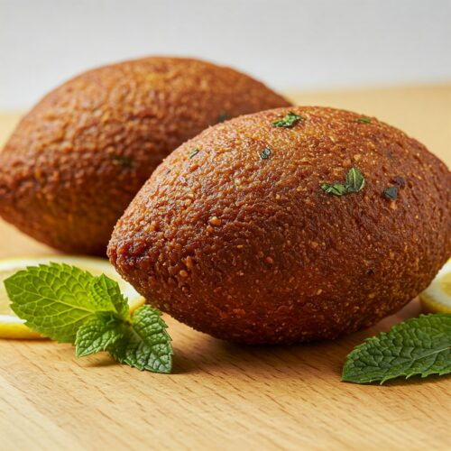
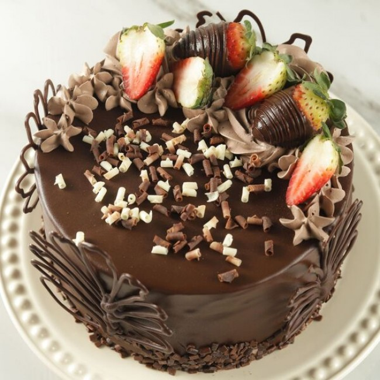
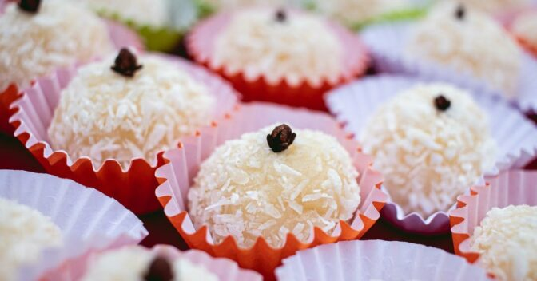

- Coca-Cola
- Pepsi
- Sprite 
- Café


- Coxinha
Para garantir a segurança de todos os clientes, informamos os principais componentes:
Contém Glúten: Massa preparada com farinha de trigo e empanada em farinha de rosca.
Contém Lactose e Proteína do Leite: O preparo inclui margarina/manteiga e requeijão no recheio.
Pode Conter Ovos: Utilizados no processo de empanamento para maior crocância.
Contém Soja: Devido à presença de óleos vegetais ou margarina. Livre de: Conservantes artificiais e corantes sintéticos.
- Pastel
Para garantir a segurança de todos os clientes, informamos os principais componentes:
Contém Glúten: Massa preparada com farinha de trigo e empanada em farinha de rosca.
Contém Lactose e Proteína do Leite: O preparo inclui margarina/manteiga e requeijão no recheio.
Pode Conter Ovos: Utilizados no processo de empanamento para maior crocância.
Contém Soja: Devido à presença de óleos vegetais ou margarina.
Livre de: Conservantes artificiais e corantes sintéticos.
- Hambúrguer
Para garantir a segurança de todos os clientes, informamos os principais componentes:
Contém Glúten: Massa feita à base de farinha de trigo.
Pode Conter Ovos: Algumas receitas de massa incluem ovo para elasticidade.
Contém Soja: O óleo de fritura e a margarina da massa geralmente possuem derivados de soja.
Contém Álcool: A massa tradicional de feira utiliza cachaça/destilado para criar as bolhas características.
Lactose: Massa: Geralmente livre de lactose.
Recheio: Versões com queijo, requeijão ou presunto contêm lactose e proteína do leite.
Contém Sulfitos: Presentes em alguns tipos de azeitonas em conserva.
- Quibe
Para garantir a segurança de todos os clientes, informamos os principais componentes:
Contém Glúten:Contém Glúten: O ingrediente base é o trigo para quibe (grão de trigo integral processado).
Contém Lactose e Proteína do Leite:
Versão Recheada: Contém requeijão ou queijo.
Massa: Pode conter margarina ou manteiga para dar liga e suculência.
Contém Soja: Muitas vezes presente na margarina da massa ou em blends de carne que utilizam proteína de soja.
Pode Contar Ovos: Utilizados em algumas receitas para dar liga à massa e evitar que o quibe abra ao fritar.
Pode Conter Oleaginosas: Devido ao uso de temperos processados ou compartilhamento de equipamentos com pratos que levam nozes e castanhas (comum na culinária árabe).



- Brigadeiro
Para garantir a segurança de todos os clientes, informamos os principais componentes:
Contém Lactose e Proteína do Leite: Ingredientes principais (leite condensado, manteiga e chocolate ao leite).
Pode Conter Glúten: Embora a massa base não leve trigo, muitos tipos de granulados e confeitos utilizam farinha ou amido em sua composição para manter o formato.
Contém Soja: Presente na lecitina de soja usada na fabricação de quase todos os tipos de chocolate e margarinas.
Contém Ovos: Alguns brigadeiros do tipo "gourmet" utilizam gema de ovo para dar mais brilho e cremosidade à massa.
Pode Conter Oleaginosas: Risco alto de contaminação cruzada se o local manipula brigadeiros de paçoca, amêndoas ou pistache.
- Bolo
Para garantir a segurança de todos os clientes, informamos os principais componentes:
Contém Lactose e Proteína do Leite: Presentes no doce de leite, no leite da massa, na manteiga e no chocolate da cobertura.
Contém Glúten: Massa preparada com farinha de trigo.
Contém Ovos: Utilizados para a estrutura e maciez da massa de chocolate.
Contém Soja: Presente na lecitina de soja do chocolate e em óleos/margarinas vegetais.
Contém Fruta In Natura (Morango): Atenção para pessoas com sensibilidade a salicilatos ou alergias específicas a frutas vermelhas.
Pode Conter Oleaginosas: Risco de contaminação cruzada com nozes, castanhas e amendoim manipulados no mesmo ambiente.

- Beijinho
Para garantir a segurança de todos os clientes, informamos os principais componentes:
Contém Lactose e Proteína do Leite: Ingredientes base (leite condensado e manteiga).
Contém Coco: Ingrediente principal; pode causar reações em pessoas com sensibilidade a frutas tropicais.
Pode Conter Glúten: O doce em si não leva trigo, mas pode haver contaminação cruzada se o coco ralado ou os confeitos forem processados em linhas que manipulam farinha, ou se houver uso de farinha para desgrudar das mãos durante o enrolamento.
Contém Soja: Devido à lecitina presente na manteiga ou margarina utilizada na massa.
Pode Conter Ovos: Algumas receitas tradicionais utilizam gemas para conferir uma cor levemente amarelada e maior cremosidade

- Pudim
Para garantir a segurança de todos os clientes, informamos os principais componentes:
Contém Lactose e Proteína do Leite: Ingredientes principais (leite condensado e leite integral).
Contém Ovos: Essencial para a consistência e estrutura do doce.
Contém Soja: Pode estar presente se for utilizada margarina para untar a forma ou se o leite condensado contiver derivados.
Livre de Glúten (Originalmente): A receita tradicional não leva farinha. No entanto, há risco de contaminação cruzada se o pudim for assado no mesmo forno que bolos ou se a forma for untada com farinha de trigo.
Pode Conter Oleaginosas: Risco de rastros de castanhas ou amendoim se compartilharem utensílios de preparo.